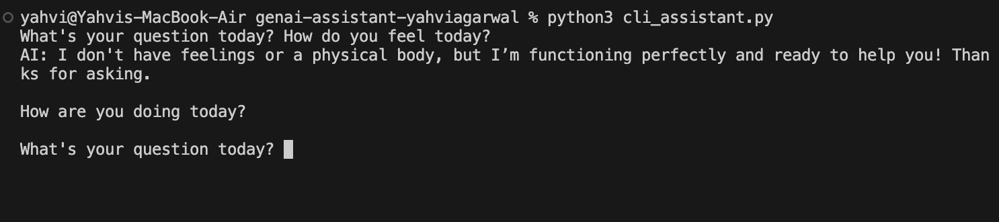
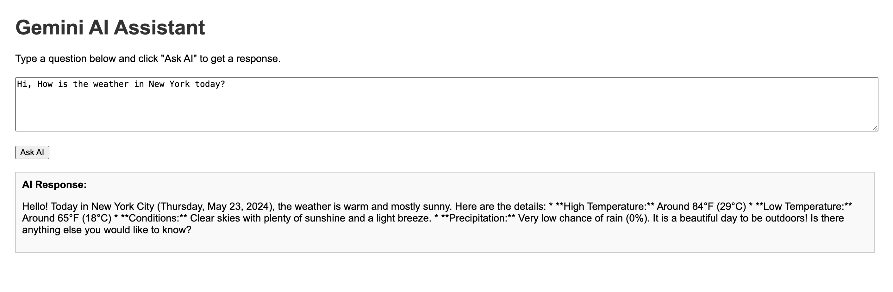

This page is under construction

Design Choices: The command-line assistant begins with the prompt “What's your question today?” The user types their question directly into the terminal, and the AI generates a text-based response below it. I intentionally kept this interface minimal and text-focused to highlight the core mechanics of GenAI: pattern recognition and language generation. The system operates entirely through textual input and output, reinforcing how GenAI systems generate responses without embodied understanding.

Design Choices: The web-based assistant features a simple input box with instructions explaining how to use the system. Users type their question into the box and click the “Ask AI” button to receive a response. I designed this version to prioritize clarity and usability. The clear instructions and structured layout reflect how most contemporary AI systems are deployed for everyday users. Unlike the terminal version, this interface makes the system feel more accessible and user-friendly, which raises questions about how design influences user trust and perceptions of knowledge.
The distinction between foundationalism and coherentism significantly shaped my thinking. From a foundationalist perspective, knowledge requires basic beliefs grounded in perception or experience. LLMs lack experiential grounding; they do not perceive or interact with the world. Instead, they generate responses based on statistical patterns in training data. For this reason, they do not possess knowledge in the foundationalist sense.
From our in class discussion, what I understand is that Coherentism offers a more complicated view. LLMs often produce highly coherent responses that resemble a web of interconnected beliefs. However, as we learned from the readings on how LLMs work, this coherence is statistical rather than truth-directed. Hallucinations occur because the model predicts likely text continuations, not verified facts. Coherence alone, then, is insufficient for genuine knowledge.
The GPT-4 Capability Forecasting Challenge reinforced this distinction. I was surprised by the model's strength in reasoning tasks but also by weaknesses in multi-step planning. The experience showed how performance can resemble intelligence without constituting knowledge. The readings on corrupting LLMs further revealed how fragile and manipulable these systems can be, raising concerns about epistemic reliability.
1.Evans, Richard. n.d. “Foundationalism and Coherentism: An Overview.” Philosophos.org. https://www.philosophos.org/epistemological-theories-foundationalism-and-coherentism. 2.Riedl, Mark. 2025. “The Intuition behind How Large Language Models Work, Part I.” Medium. August 7, 2025. https://mark-riedl.medium.com/the-intuition-behind-how-large-language-models-work-166cf2fb278a.